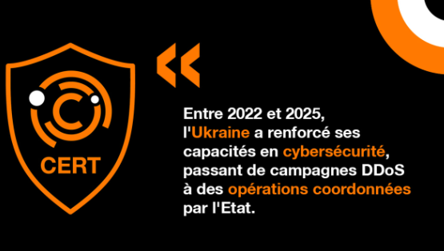

Déni de service
Surcharger un service avec un grand nombre de requêtes afin de le rendre temporairement inaccessible.

Au début de l’invasion russe, l’Ukraine subit de nombreuses cyberattaques. Des sites gouvernementaux sont piratés et des logiciels destructeurs comme WhisperGate sont utilisés. L’attaque contre le réseau satellite Viasat perturbe également les communications.
Les attaques continuent principalement pour espionner, voler des informations et perturber certains services grâce notamment aux attaques DDoS.
Les groupes russes poursuivent leurs opérations contre les administrations, les entreprises et les infrastructures ukrainiennes. Les attaques sont de plus en plus ciblées.
La cyber-guerre s’étend aux pays qui soutiennent l’Ukraine. Des groupes pro-russes attaquent notamment des organisations et infrastructures occidentales.
Les cyberattaques restent un élément important du conflit, principalement pour l’espionnage, la perturbation et le sabotage.
depuis 2022, la guerre en Ukraine se déroule aussi sur Internet, avec des attaques visant à voler des informations, perturber les services et affaiblir l’adversaire.
Surcharger un service avec un grand nombre de requêtes afin de le rendre temporairement inaccessible.
Logiciels malveillants conçus pour détruire ou rendre inutilisables les données d'un système.
Courriels et messages piégés permettant de voler des informations ou d'obtenir un premier accès.
Logiciels qui bloquent ou chiffrent les données afin d'obtenir une rançon.
Vol d'informations gouvernementales, militaires ou stratégiques.
Utilisation de bots, de fausses informations et de deepfakes pour influencer l'opinion publique.
| conséquences | exemples | sources |
|---|---|---|
| Communications perturbées | La dernière attaque – contre Viasat le 24 février – a commencé environ une heure avant que la Russie ne lance sa grande invasion de l’Ukraine. Le NCSC estime que la Russie est presque certainement responsable de l’attaque. Bien que la cible principale ait été l’armée ukrainienne, d’autres clients ont été touchés, y compris des internautes particuliers et commerciaux. Les parcs éoliens d’Europe centrale et les utilisateurs d’internet ont également été affectés. | NCSC, Russia behind cyberattack with Europe-wide impact (2022) |
| L’infrastructure civile détruite | Les cyberattaques ne visent plus seulement les militaires : elles frappent aussi les civils au cœur de leur quotidien. En décembre 2024, le piratage des registres étatiques du ministère de la Justice ukrainien a provoqué une paralysie brutale : passeports bloqués, transactions immobilières suspendues, franchissements de frontières interrompus. | DATA SECURITY BREACH, L’infrastructure civile, nouvelle cible stratégique (2024) |
| Destruction de données | Il est certain que les développeurs de WhisperGate n'avaient pas l'intention derestaurer un jour les données de leurs victimes. Ce maliciel prétendait être un bloqueur MBR (Master Boot Record), au lieu de cela, WhisperGate en a fait un destructeur. Au cours de ses trois étapes opérationnelles, WhisperGate a compromis le MBR et chargé un corrompeur de fichiers qui a écrasé des fichiers de différents formats avec des données statiques non déchiffrables. | Pcrisk, Virus Rançongiciel WhisperGate(2024) |
| Infrastructures menacées | Des groupes liés à la Russie ont ciblé le réseau électrique ukrainien, notamment avec Industroyer2. L’échantillon initial d’Industroyer2 avait été compilé le 23/03/2022 et prévu pour être exécuté le 08/04/2022, cependant il a été découvert avant le déploiement, sans aucun impact. Il aurait pu toucher environ deux millions de personnes si elle avait réussi. | Attack.mitre, Industroyer2 (2022) |
Le cyberespace constitue un nouveau terrain d'affrontement complémentaire aux opérations militaires.
Les attaques peuvent interrompre l'activité des entreprises et provoquer des pertes considérables.
Les cyberattaques et la désinformation peuvent chercher à déstabiliser un gouvernement.
Une cyberattaque peut dépasser les frontières et toucher des pays qui ne sont pas directement impliqués dans le conflit.
Le droit international doit encore préciser davantage les règles applicables aux cyberattaques menées pendant un conflit.
L'intelligence artificielle pourrait rendre les futures attaques plus automatisées et plus difficiles à détecter.